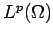
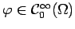

Für ein beliebiges (offenes) Gebiet  bezeichnet die Menge aller in
bezeichnet die Menge aller in  beliebig oft differenzierbaren Funktionen
beliebig oft differenzierbaren Funktionen  mit kompaktem Träger, d.h. die Menge
mit kompaktem Träger, d.h. die Menge
Faßt man die Elemente aus als die von ihnen in  erzeugten Klassen auf, so gilt bei beschränktem  die Inklusion , wobei sogar dicht liegt. Ist
die Inklusion , wobei sogar dicht liegt. Ist  unbeschränkt, so liegt (in diesem Sinn) die Menge dicht in .
unbeschränkt, so liegt (in diesem Sinn) die Menge dicht in .
Die Formel der partiellen Integration hat für eine vorgegebene feste Funktion und eine beliebige Funktion  wegen die Gestalt
für mit , die man als Ausgangspunkt für den Begriff der verallgemeinerten Ableitung einer Funktion  nehmen kann.
nehmen kann.